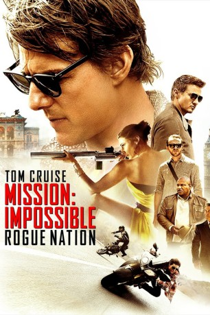
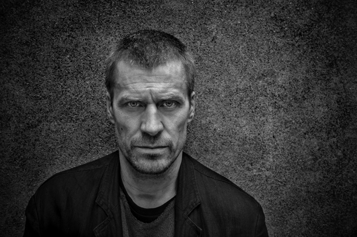
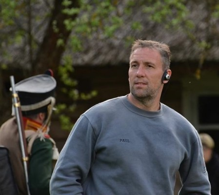

#2368 Mission: Impossible 5 - Rogue Nation
 
 IMDB-Wertung: 7.4 / 10
IMDB-Wertung: 7.4 / 10  Metascore: 75
Metascore: 75 
Nachdem das Pentagon die Impossible Missions Force aufgelöst hat, ist Ethan Hunt auf sich allein gestellt. Doch gerade jetzt hat der ehemalige IMF-Agent die Spur der geheimnisvollen und hochgefährlichen Organisation „Syndikat“ aufgenommen, die sich schon bald als sein mächtigster Gegner erweist. Aus dem Untergrund heraus operiert das „Syndikat“ mit bestens ausgebildeten Spezialagenten und diese scheinen Hunt immer einen Schritt voraus zu sein – und ihre Mission ist teuflisch: Sie wollen durch gezielte Anschläge eine neue Weltordnung schaffen und alle ehemaligen Mitglieder der IMF auslöschen, um ihre Pläne ungestört verwirklichen zu können. In offizieller Mission der Regierung oder nicht, Ethan Hunt kann nicht zusehen, wie der Terror immer weiter um sich greift, und reaktiviert sein einzigartiges Team. Unerwartete Hilfe bekommt das Quartett von der geheimnisvollen Agentin Ilsa Faust – doch auf welcher Seite steht sie wirklich?
Jahr: 2015
Dauer: 131 Minuten
FSK: 12
Land: USA Studio: Paramount PicturesTonspuren:
Untertitel: Englisch, Deutsch,
Auflösung: 1080p (1920x808) Größe: 11161 MB
Genre: Action, Thriller, Abenteuer
Regisseur: Christopher McQuarrie
Drehbuch: Christopher McQuarrie, Christopher McQuarrie, Drew Pearce, Bruce Geller
Soundtrack: Joe Kraemer
Darsteller:
 Tom Cruise als Ethan Hunt
Tom Cruise als Ethan Hunt Jeremy Renner als William Brandt
Jeremy Renner als William Brandt Simon Pegg als Benji Dunn
Simon Pegg als Benji Dunn Rebecca Ferguson als Ilsa Faust
Rebecca Ferguson als Ilsa Faust Ving Rhames als Luther Stickell
Ving Rhames als Luther Stickell Sean Harris als Lane
Sean Harris als Lane Simon McBurney als Atlee
Simon McBurney als Atlee- Jingchu Zhang als Lauren
 Tom Hollander als Prime Minister
Tom Hollander als Prime Minister-  Jens Hultén als Janik Vinter
 Alec Baldwin als Alan Hunley
Alec Baldwin als Alan Hunley- Mateo Rufino als A400 Pilot
- Fernando Abadie als A400 Pilot
 Alec Utgoff als A400 Crewman
Alec Utgoff als A400 Crewman Hermione Corfield als Record Shop Girl
Hermione Corfield als Record Shop Girl- Nigel Barber als Chairman
 William Roberts als Senator
William Roberts als Senator- Barnabás Réti als Janik's Sentry
- James Weber Brown als IMF Operator
- Robert Maaser als Officer Assassin
 Wolfgang Stegemann als Flautist Assassin
Wolfgang Stegemann als Flautist Assassin- Eva-Marie Becker als Opera Lighting Technician
- Adam Ganne als Opera Lighting Technician
 America Olivo als Turandot
America Olivo als Turandot- Stella Stocker als Opera Stage Manager
- Martin Bermoser als Opera Director
- Nina Hartmann als Opera Security
- Laurence Rupp als Opera Police
- Wolfgang Cerny als Opera Police
- Judith Bogner als Chancellor's Wife
- Ulli Ackermann als Chancellor's Security Aide
- Saif Al-Warith als Saif
- Tyler Fayose als CIA Agent
 Sean Cronin als Masked Syndicate Man
Sean Cronin als Masked Syndicate Man- Emilio Aniba als Power Plant Guard
 Amra Mallassi als Power Plant Guard
Amra Mallassi als Power Plant Guard- Hadrian Howard als Power Plant Security
- Walles Hamonde als Power Plant Security
- Sagar Radia als Control Lab Technician
 Yasen Atour als Control Lab Technician
Yasen Atour als Control Lab Technician Mingus Johnston als Lead Biker
Mingus Johnston als Lead Biker Osy Ikhile als CIA Jet Agent
Osy Ikhile als CIA Jet Agent- Nigel Allen als CIA Jet Agent
- Bruce Lawrence als Prime Minister's Bodyguard
- Femi Ogunbanjo als Prime Minister's Bodyguard
- Katie Pattinson als Auctioneer
- Mairead Armstrong als Charity Event Guest , uncredited
 Lasco Atkins als CIA Agent , uncredited
Lasco Atkins als CIA Agent , uncredited- Charles Babalola als CIA Technician , uncredited
-  Paul Biddiss als Soldier , uncredited
Datei: X:\6-Hexalogie(A-Z)\Mission Impossible\Mission Impossible 5 - Rogue Nation (2015, FSK12, 1920x808).mkv seit 03.11.2015
Festplatte: HD Collection-3(N-Z)-6(A-Z)
 Es gibt insgesamt 10 Filme in der Gruppe '6-Hexalogie(A-Z)\Mission Impossible'
Es gibt insgesamt 10 Filme in der Gruppe '6-Hexalogie(A-Z)\Mission Impossible'